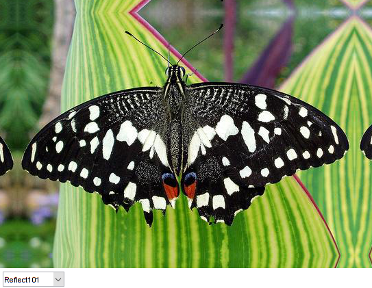

Adding image borders
In this demo, we show how to use the OpenCV function cv.copyMakeBorder to set the borders (extra image padding).
Sources:
Contents
Theory
The explanation below belongs to the book Learning OpenCV by Bradski and Kaehler.
One problem that naturally arises when performing convolution to operate on images is how to handle the boundaries. How can we convolve them if the evaluated points are at the edge of the image?
What most of OpenCV functions do is to copy a given image onto another slightly larger image and then automatically pads the boundary (by any of the methods explained below). This way, the convolution can be performed over the needed pixels without problems (the extra padding is cut after the operation is done).
In this demo, we will briefly explore two ways of defining the extra padding (border) for an image:
- Constant: Pad the image with a constant value (i.e. black or 0)
- Replicate: The row or column at the very edge of the original is replicated to the extra border.
Code
First we load an image. Next we let the user choose what kind of padding to use on the input image:
- Reflected border
- Replicated border: The border will be replicated from the pixel values at the edges of the original image.
- Warped border
- Constant value border: Applies a padding of a constant value for the whole border. This value can be selected from a color picker dialog.
function varargout = padding_demo_gui(im) % load source image if nargin < 1 img = cv.imread(fullfile(mexopencv.root(),'test','butterfly.jpg')); elseif ischar(im) img = cv.imread(im, 'Color',true); else img = im; end if size(img,3) == 1 img = cv.cvtColor(img, 'GRAY2RGB'); end % create the UI h = buildGUI(img); if nargout > 0, varargout{1} = h; end end function padSz = padSize(sz) %PADSIZE Size of image padding [top, bottom, left, right] % pad by 5% of the image size padSz = round(sz([1 1 2 2]) * 0.05); end function onType(~,e,h) %ONTYPE Event handler for key press on figure % handle keys switch e.Key case 'h' helpdlg({ 'Hot keys:' 'h - this help dialog' 'q - quit the program' 'f - pad the image by reflecting borders' 'r - pad the image by replicating borders' 'w - pad the image by wrapping borders' 'c - pad the image with constant value' 's - save current image' }); case {'q', 'escape'} % quit close(h.fig); case {'f', 'r', 'w', 'c'} % border type [~,idx] = ismember(e.Key, {'f', 'r', 'w', 'c'}); set(h.pop, 'Value',idx); onChange([], [], h); case {'s', 'space'} % save image img = get(h.img, 'CData'); fname = fullfile(tempdir(), ... sprintf('out_%s.png', datestr(now(),'yyyymmddTHHMMSS'))); cv.imwrite(fname, img); disp(['Saved ' fname]); end end function onChange(~,~,h) %ONCHANGE Event handler for UI controls % border type types = get(h.pop, 'String'); idx = get(h.pop, 'Value'); props = {'BorderType',types{idx}}; % border value if strcmp(types{idx}, 'Constant') if mexopencv.isOctave() %HACK: uisetcolor not implemented in Octave clr = randi([0 255], [1 3]); else clr = round(uisetcolor() * 255); end props = [props, 'Value',clr]; end % perform padding out = cv.copyMakeBorder(h.src, padSize(size(h.src)), props{:}); % show result set(h.img, 'CData',out); drawnow; end function h = buildGUI(img) %BUILDGUI Creates the UI % initial padding out = cv.copyMakeBorder(img, padSize(size(img))); sz = size(out); % build the user interface (no resizing to keep it simple) h = struct(); h.src = img; h.fig = figure('Name','CopyMakeBorder Demo', ... 'NumberTitle','off', 'Menubar','none', 'Resize','off', ... 'Position',[200 200 sz(2) sz(1)+29]); if ~mexopencv.isOctave() %HACK: not implemented in Octave movegui(h.fig, 'center'); end h.ax = axes('Parent',h.fig, 'Units','pixels', 'Position',[1 30 sz(2) sz(1)]); if ~mexopencv.isOctave() h.img = imshow(out, 'Parent',h.ax); else %HACK: https://savannah.gnu.org/bugs/index.php?45473 axes(h.ax); h.img = imshow(out); end h.pop = uicontrol('Parent',h.fig, 'Style','popupmenu', ... 'Position',[5 5 90 20], ... 'String',{'Reflect101','Replicate','Wrap','Constant'}); % hook event handlers opts = {'Interruptible','off', 'BusyAction','cancel'}; set(h.fig, 'WindowKeyPressFcn',{@onType,h}, opts{:}); set(h.pop, 'Callback',{@onChange,h}, opts{:}); end